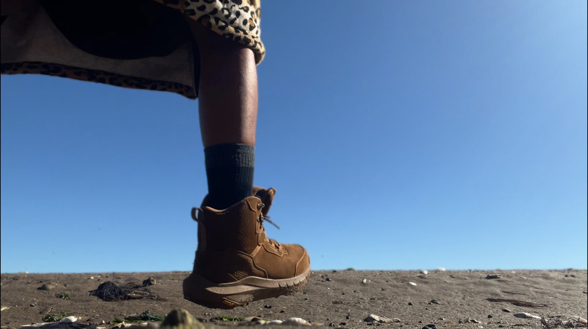
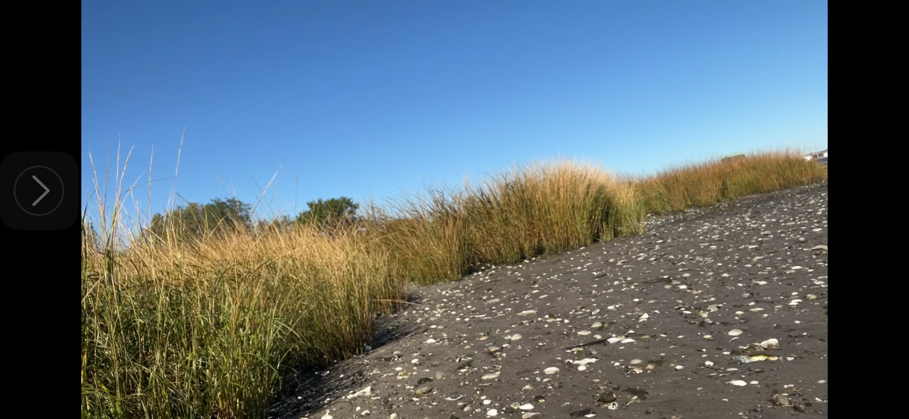

Mission
Grounds 4 Peace is a transdisciplinary humanitarian and technological initiative for re-engineering the interface between human bodies, public infrastructure, and planetary systems. We understand that widespread disregard for the body is not incidental, but woven into the built, social, and ecological fabric of a society shaped by settler violence, genocide, trafficking, torture, and the normalization of harm. This abuse has been etched into the infrastructures of everyday life, and therefore affects our neurological patterns and human relationships of life in North America and globally. Prolonged abuse causes inner conflict, illness, relational abuse and war.
Yet we remember our humanity and steer our work with a humanitarian directive to respect our bodies and build our world to be physically good for us and not bad for us. Grounds for Peace is here to facilitate the transitional upgrade ecological infrastructure, agriculture, education, built environments, public access and environmental remediation. Our work is here to bridge deep embodiment with high-level technological innovation to develop regenerative urban surfaces, trauma-free emergency and safety signaling, and self-generating water stations as primary basics for public infrastructures.
By aligning humanitarian ethics informed by somatics with material science and design, we facilitate building better pathways toward infrastructures that feel, breathe, and support human and planetary well-being. The thriving of both the Earth and the living human body are not separate, but are co-constitutive grounds of life.
Problem Statement

Our current infrastructures hurt. Walking on sidewalks hurts. Lack of consistent, free, and easeful access to water hurts. Educational systems which normalize physical harm as essential to learning hurt. Sonic environments of loud sirens, high pitched beeping sounds, and loud power tool sounds hurt.
The infrastructures which make the quality of our daily lives—sidewalks, roads, schools, workplaces, water dispensation and emergency/alarm signaling systems—have been designed around mechanical efficiency, not biological integrity. These environments injure the spine, compress the lungs, distort gait, overload the nervous system, and contribute to the climate emergency through toxic, rigid materials.
This is not accidental. It reflects an inherited design paradigm rooted in eugenics influenced capitalistic notions of human expendability which normalizes harm. The result is a civilization whose built environments reproduce trauma at every level, from cellular to planetary scales.
Grounds for Peace exists to reverse this logic by developing Living Infrastructure: systems designed with the body as the fundamental priority. Our aim is to restore somatic coherence at the infrastructural level—to upgrade human settlements, customs, tools, and materials that support life instead of degrading it.
Transdisciplinary Approach
Translate principles of embodied intelligence into material innovation at the intersection of somatics, physics, design, and ecology.
- Somatic Intelligence: The human body as sensor, feedback loop, and design guide. Informed by movement, injury prevention, and biomechanical needs, we derive specifications for materials and spatial forms that sustain health rather than disfigure us.
- Quantum & Nano Inquiry: Collaboration with scientists exploring how matter behaves at micro and sub-atomic levels to identify possibilities for water accessibility and regenerative materials: self sustaining and repairing unmetered watering stations, water-conductive composites, shock-absorbing biomaterials, and stimulus-responsive surfaces.
- Ecological Design: Translating micro-level coherence into macro-level infrastructure: roads, buildings, and soundscapes integrating hydrological balance, soil health, consoles and transport mechanisms which support postural integrity.
- Humanitarian Alignment: We hold technology accountable to life. Every prototype—whether a sidewalk, signal, or interface console—must reduce harm and increase vitality for bodies, communities, and ecosystems alike.
This fusion of embodiment and innovation defines Grounds 4 Peace both as a movement and a research frontier: living laboratories for co-designing a civilization that no longer destroys what it depends on.
Key Initiatives
Let’s get our infrastructural basics in order!
Living and Self-Generating Ground Systems

Regenerative Ground Systems: Shock-absorbent, moisture-conductive urban surfaces combining botanical and nano-engineered materials.
Develop shock-absorbent, stimulus responsive and moisture-conductive roads/sidewalks/grounds/floor surfaces that support human biomechanical health, tree-root cooperation, and climate resilience.
Facilitating the collaborations necessary to explore how nanomaterials and regenerative composites can replace conventional concrete, cement, asphalt etc. to create streets, sidewalks, floors and plazas that sustain rather than harm our musculoskeletal systems and neurological health. By patterning physical nurturing rather than injurious abuse through physically interacting with our grounds, we lay foundations for peace in our behaviors. We facilitate cross-sector design collaborations to make replacements of injuriously hard and uneven grounds/floors—concrete sidewalks, asphalt roads, cement floors etc.—with shock-absorbent, water-conductive, tree-root-cooperative and evenly leveled surfaces.
Auditory Ecology & Non-Traumatizing Signals
Neurologically Safe Bioacoustic Alert Systems: Non-traumatizing sirens, alarms, alerts for environmental soundscapes that protect auditory and neurological health.
Redesign and replace harmful auditory signals—such as sirens, vehicle safety signals, emergency alert and alarm systems which damage human ears, nervous systems and fetal development—with alternatives that promote rather than destroy human health.
Water Autonomy Technologies
Self-Generating Water Autonomy Technologies: Apparatus and systems to autonomously produce potable water based quantum and molecular principles.
Design and development of self-generating water stations, informed by quantum-level and materials science principles. We aim to facilitate the development of equitable access to potable water while integrating environmental stewardship and energy efficiency.
Somatic Co-regulation Hubs

We host in-person sessions held in nature for families, couples, and groups that cultivate embodied awareness, co-regulation, and integrative healing. These hubs serve as living laboratories, where somatic intelligence informs design and technology choices for urban and ecological infrastructure.
Our somatic co-regulation sessions reject pathologizing models of emotional and behavioral health with the understanding that there is nothing wrong with you. You are being responsive to the physical elements of your environment. Toxic environmental elements affect our emotions and behaviors. We center each participant in their inherent wisdom, sensory intelligence, and right to feel good. You are not broken. You are responding. Let’s respond together.
Educational Biodesign Frameworks

Classrooms, offices, studios, and labs designed for movement, postural freedom, and environmental responsiveness.
Reimagine learning environments that support postural freedom, somatic learning, and sensory-responsive spaces for proprioceptive safety. Work with educational designers to develop classrooms and studios that integrate movement, ergonomics, and environmental health into curricula.
We reimagine learning environments by calling for the abolition of physical harm (including forced stillness and chronic sitting) as a basis for education. We support postural freedom, somatic learning, and sensory-responsive environments in schools, including biodynamic food gardens, as essential.
Collaboration & Partnership
Building the Ecosystem: A Call for Collaboration
Grounds for Peace is a vision requiring a multi-tiered collaborative ecosystem to move from concept to physical reality. To successfully shift built environments from spaces of trauma to spaces of biological integrity, the initiative is actively seeking foundational partnerships across four critical layers of development:
- 1. Research & Visionary Allies: Seeking alignment with scientists, somatic practitioners, designers, and academic institutions to establish the definitive theoretical models and material baselines.
- 2. Civic & Policy Strategists: Looking to engage municipal leaders, urban planners, and regulatory experts to help pave the legal and zoning pathways necessary for public-space integration.
- 3. Fabrication & Building Partners: Inviting material manufacturers, innovative construction contractors, and material engineers to collaborate on translating blueprints into testable, physical urban surfaces.
- 4. Community & Stewardship Anchors: Connecting with neighborhood organizers, land trusts, and local advocates to ensure that future pilot projects are deeply rooted in, co-designed by, and ultimately cared for by the communities they serve.
Contact & Invitation
Grounds 4 Peace seeks collaboration with visionary scientists, engineers, designers, foundations, grantmakers, and mission-aligned resource partners committed to advancing human-centered infrastructure. Realizing this vision will require strategic investment, material support, technical expertise, and aligned partnerships. Together, we can transform bold ideas into living systems that better support human flourishing, ecological regeneration, and a more peaceful future.
For inquiries, partnership proposals, or speaking engagements, email us at:
grounds4peace.org@gmail.comGrounds 4 Peace Founder: Milandi Madiba
The world is not OK and Milandi Madiba has something to say. Catalyze reform. Indigenous and Black American survivor of ancestral slavery, attempted genocide, and North America today; Madiba is an Artist, Master Somaticist, and Facilitator. Walking her lands, she encounters people responding toxically to injuriously hazardous grounds, musculo-skeletally warping buildings, scarcity of safe water and poison-free food, soundscapes that assault the nervous system, standardization of medical malfeasance, brain damage due to lack of oxygenated airflow, educational and work cultures designed to force bodies into console use and postures that unravel human health—all arising from, and maintaining dehumanizing systems of economic valuation. Unacceptable!
Unwilling to extend her bloodline into these conditions, Madiba founds Grounds 4 Peace as an intervention. With 22+ years of experience in somatic consulting, embodied arts, holistic wellness, and ecological advocacy, she brings the intelligence of the living body to the reinvention of infrastructure. Her work asserts: rather than patterning abuse into our neurology through perpetual harm, what we build must honor the sacredness of the body—or we replicate the conditions of war.
Raised by a psychologist grandmother and trained across physical and intellectual disciplines, Madiba has learned that emotions are avtually physiologic responses to environmental stimuli yi which we simetimes attach stories. Harmful environmental stimuli produce harmful emotions, which lead to harmful relational behaviors. Grounds 4 Peace convenes cross-sector intelligence—grounded in emergent processing from arts settings despite an arts sector that has been chronically devalued and structurally under-resourced—to restore ecological integrity and transform the ways we build, move, relate, and repair our world.
Milandi Madiba’s work is relational, emergent, iterative—and the world needs it now. Madiba: Reinfrastructure society to honor the health of our sacred bodies, and peace shifts from aspiration to reality.